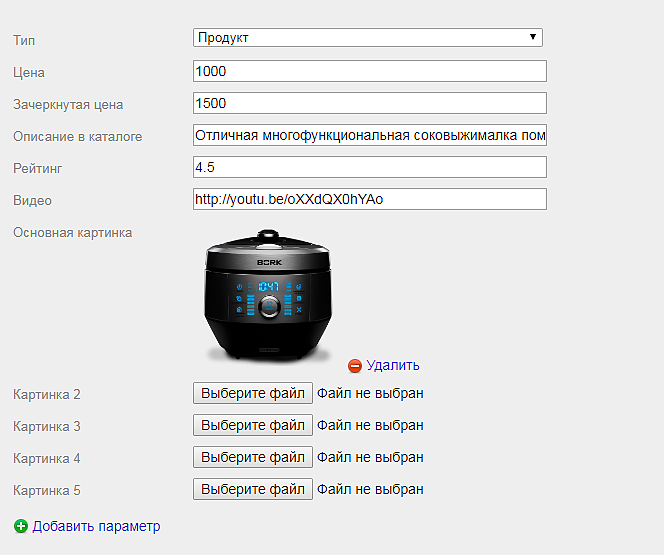

Для того чтобы тема использовала все свои возможности в приложение сайт необходимо использовать следующие дополнительные параметры:
- price - Цена, можно использовать как простое числовое значение (система отформатирует его по правилам числительных) так и просто текстовое значение, например: договорная
- compare_price - Зачеркнутая цена
- type - Тип страницы, возможные значения:
- category - Категория товаров
- product - Товар
- если тип не указан то он определяется автоматически (категория - если страница указана в настройках темы как каталог товаров, товар - если родительская страница указана в настройках темы как каталог товаров) иначе страница определяется как текстовая
- summary - краткое описание товара в каталоге
- image - основная картинка товара
- image_2 до image_10 - дополнительные картинки товара
- video - ссылка на YouTube или Vimeo видео
- rating - рейтинг, дробное значение от 0 до 5
Для удобства заполнения параметров вы можете воспользоваться приложением "Параметры" которое позволяет более удобно работать с товарами:

Файл с настройками параметров для импорта в приложение.
Помимо этого в теме дизайна предусмотрено автоматическое использование предоставляемого приложением Параметры хелпера для уменьшения изображений, которые используется для генерации уменьшенных копий изображений товаров в каталоге и на странице просмотра.
Для купивших тему "Профессиональный лендинг" предоставляется скидка на приложение 50%, для этого отправьте запрос на support@echo-company.ru